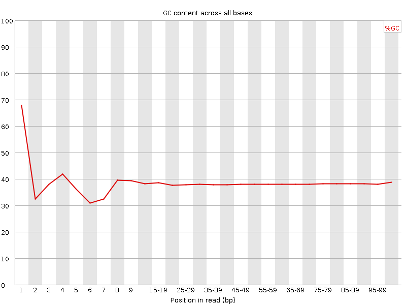

![[OK]](Icons/tick.png) Basic Statistics
Basic Statistics
| Measure | Value |
|---|---|
| Filename | c4.2.fq |
| File type | Conventional base calls |
| Encoding | Sanger / Illumina 1.9 |
| Total Sequences | 31372368 |
| Filtered Sequences | 0 |
| Sequence length | 100 |
| %GC | 38 |
Per base sequence quality
Per sequence quality scores
![[FAIL]](Icons/error.png) Per base sequence content
Per base sequence content
Per base GC content

![[WARN]](Icons/warning.png) Per sequence GC content
Per sequence GC content
Per base N content

Sequence Length Distribution
Sequence Duplication Levels

Overrepresented sequences
No overrepresented sequences
Kmer Content
| Sequence | Count | Obs/Exp Overall | Obs/Exp Max | Max Obs/Exp Position |
|---|---|---|---|---|
| AAAAA | 20670380 | 2.5381913 | 5.6224623 | 2 |
| TTTTT | 21070500 | 2.4569547 | 5.616825 | 2 |
| CGCCG | 1619695 | 2.0484042 | 5.9492044 | 1 |
| CGACG | 2457605 | 1.9635818 | 8.33986 | 1 |
| CGAGG | 2381515 | 1.9372236 | 5.611194 | 1 |
| CGGCG | 1483940 | 1.9106812 | 5.201192 | 1 |
| CGCGG | 1418155 | 1.8259783 | 6.3942966 | 1 |
| CTTCT | 5990745 | 1.7867988 | 5.9744887 | 1 |
| CGCGA | 2128475 | 1.7006129 | 6.3590083 | 1 |
| TCGAG | 3350600 | 1.673876 | 5.0312667 | 7 |
| CTCGA | 3398540 | 1.6676451 | 9.647063 | 1 |
| CGAGA | 3173360 | 1.6018091 | 5.7684646 | 1 |
| CTTCC | 3350440 | 1.5982065 | 5.873745 | 1 |
| CGCCA | 2009175 | 1.5767586 | 5.779729 | 1 |
| CTGGA | 3147140 | 1.5722325 | 7.064135 | 1 |
| CTTTT | 8403175 | 1.5671191 | 7.612218 | 1 |
| TCGAA | 4994405 | 1.54828 | 5.0429506 | 2 |
| ATCGA | 4949345 | 1.5343113 | 5.3571815 | 6 |
| CGATC | 3125045 | 1.5334426 | 5.432052 | 4 |
| CTCCA | 3168290 | 1.5270268 | 7.696114 | 1 |
| CAAAA | 7833230 | 1.5225177 | 5.072235 | 1 |
| CTTCG | 3078380 | 1.4950054 | 7.4751754 | 1 |
| CGAAG | 2926690 | 1.4772981 | 5.8208413 | 1 |
| CCGGC | 1157755 | 1.4641956 | 5.261326 | 1 |
| CTTTC | 4899760 | 1.4614018 | 5.470389 | 1 |
| CTCGC | 1863535 | 1.4474192 | 7.4341063 | 1 |
| CTCGT | 2969600 | 1.4421767 | 8.214888 | 1 |
| CTCGG | 1818255 | 1.4378083 | 9.282965 | 1 |
| CTGGC | 1741410 | 1.3770422 | 5.284924 | 1 |
| CTCCT | 2884075 | 1.3757437 | 5.508621 | 1 |
| CTTCA | 4416280 | 1.3308899 | 6.173448 | 1 |
| CGAAA | 4223710 | 1.3229717 | 5.9782696 | 1 |
| GAATC | 4085645 | 1.2665616 | 5.2277637 | 4 |
| AATCG | 4048730 | 1.2551179 | 5.0158896 | 5 |
| CTTGG | 2505900 | 1.2390069 | 6.4903545 | 1 |
| CTTGA | 4035495 | 1.238146 | 6.1750064 | 1 |
| CTTTG | 4013955 | 1.2188683 | 6.0733805 | 1 |
| CTCCG | 1279530 | 0.9938188 | 5.1617403 | 1 |